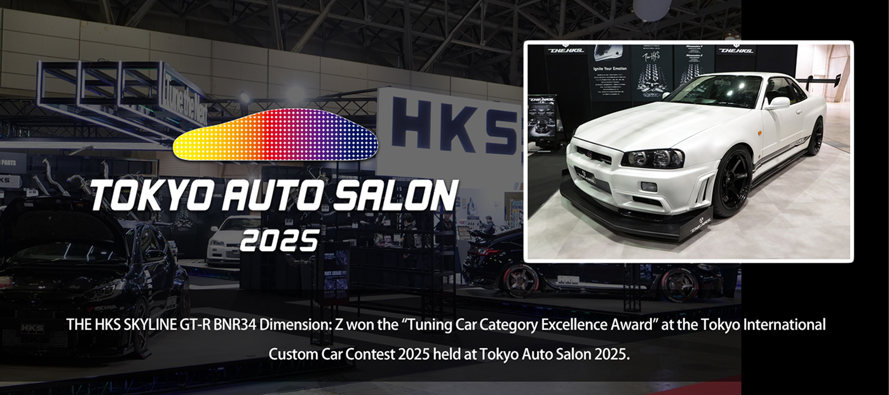
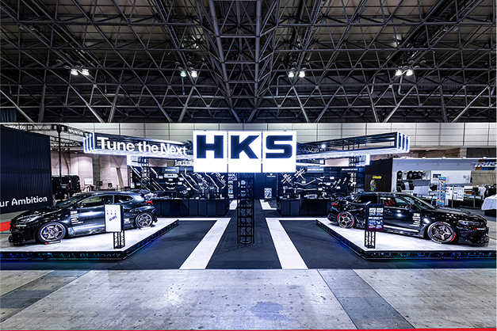

NEWS

THE HKS SKYLINE GT-R BNR34 Dimension: Z won the "Tuning Car Category Excellence Award" at the Tokyo International Custom Car Contest 2025 held at Tokyo Auto Salon 2025.


THE HKS SKYLINE GT-R BNR34 Dimension: Z won the "Tuning Car Category Excellence Award" at the Tokyo International Custom Car Contest 2025 held at Tokyo Auto Salon 2025.
TOKYO AUTO SALON 2025 was a huge success over the three days from 1/10 to 1/12.
We had a large number of visitors coming to the exhibition right after the doors opened,
and there was no end to the number of visitors to see the demo cars on display, the products, and to purchase HKS merchandise.
The “GR YARIS RZ250S” and “HIPER CIVIC FL400R” and related products were exhibited to show the latest sports car tuning efforts,
and “THE HKS SKYLINE GT-R BNR34 Dimension-Z” was displayed to show the concept of “THE HKS” vehicle sales business as well as the latest tuning approaches for historic cars.
One of the exhibited cars, “THE HKS SKYLINE GT-R BNR34 Dimension:Z” won the Excellence Award in the tuning category of “Tokyo International Custom Car Contest 2025” held at Tokyo Auto Salon 2025.
Thank you very much for your votes.
Please look forward to HKS continuing to take on the challenges ahead.